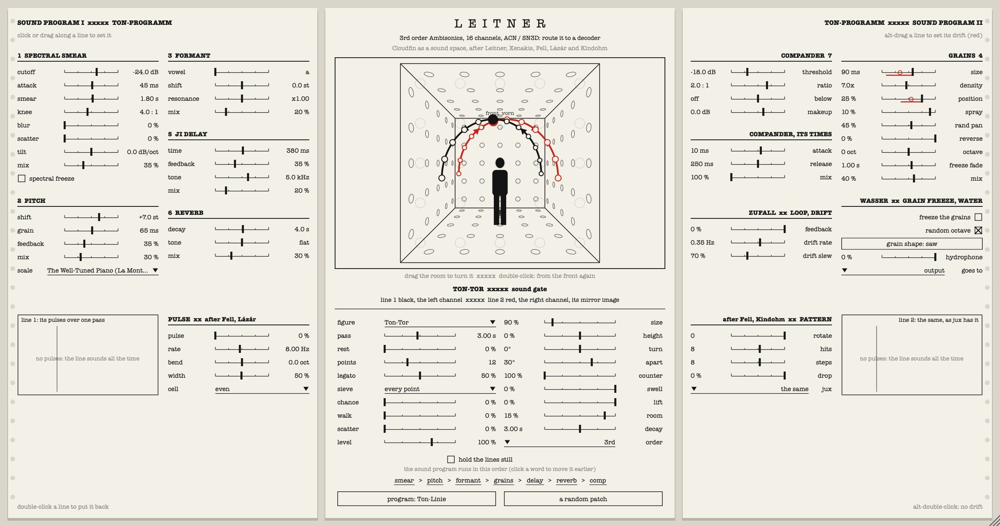
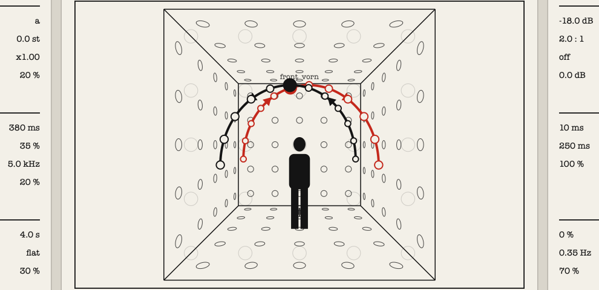
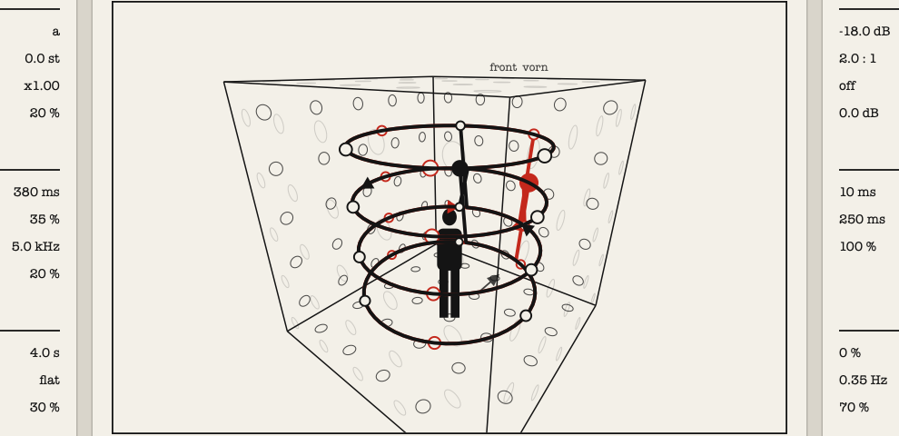
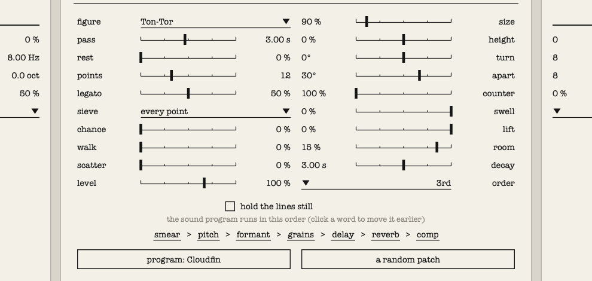
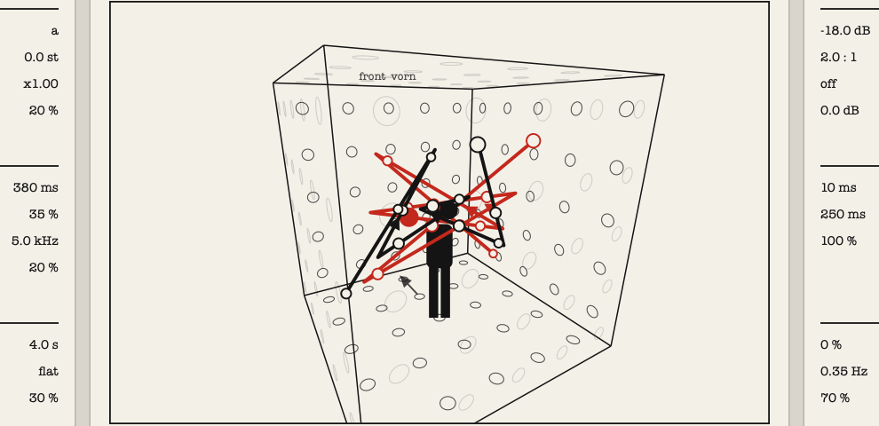
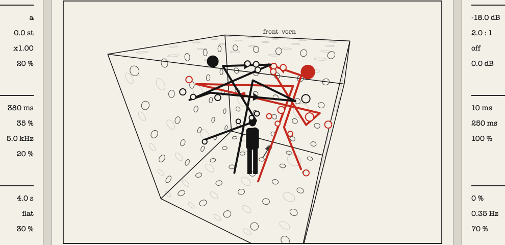
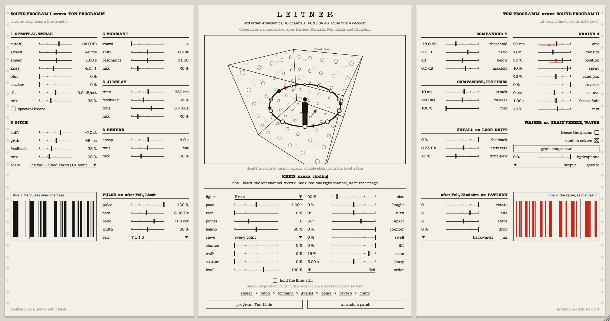

Cloudfin as a sound space xxxxx Cloudfin als Ton-Raum
An Ambisonics encoder, 3rd to 7th order, after Bernhard Leitner and Iannis Xenakis, with pulses after Mark Fell, Gábor Lázár and Kindohm

M A N U A L xxxxx H A N D B U C H
version 0.2
| 1. What Leitner is | 2 |
| 2. Installing it, and routing it to a decoder | 2 |
| 3. The window | 4 |
| 4. The room: seeing where things are | 5 |
| 5. The space: lines of sound | 6 |
| 6. The figures | 8 |
| 7. Chance: what comes from Xenakis | 9 |
| 8. Pulses: Fell, Lázár, Kindohm | 10 |
| 9. Programs, and your own presets | 12 |
| 10. The sound program: Cloudfin's effects | 14 |
| 11. Starting points | 16 |
| 12. If something seems wrong | 16 |
| 13. Every parameter | 17 |
| 14. Sources and credits | 19 |
Leitner is the Ambisonics version of Cloudfin. It has Cloudfin's seven effects, its feedback loop, its drift and its presets (the sound program). After them comes one more stage, the space program: the stereo that Cloudfin makes is sent through a room as two lines of sound, and encoded to Ambisonics.
It is an encoder. Stereo goes in; Ambisonics come out, in ACN channel order with SN3D normalisation (the AmbiX format that the IEM and SPARTA plug-ins use). It decodes nothing itself: you route it to a decoder for your loudspeakers or headphones.
Channels out: 16 at 3rd order (the default), 25 at 4th, 36 at 5th, 49 at 6th and 64 at 7th.
macOS: copy Leitner.vst3 to ~/Library/Audio/Plug-Ins/VST3 and Leitner.component (Audio Unit) to ~/Library/Audio/Plug-Ins/Components. Windows: copy Leitner.vst3 to C:\Program Files\Common Files\VST3. Linux: copy Leitner.vst3 to ~/.vst3 and Leitner.lv2 to ~/.lv2. Then rescan plug-ins in your DAW; it appears under FreakiePie. (Building it yourself on macOS or Windows puts the plug-ins in place for you.)
The window from the front, with the Ton-Tor: line 1 rising on the left as line 2 falls on the right.
The window is mirror symmetrical. In the middle is the room, with the controls of the space under it in two facing columns. On either side is a sheet of the sound program: Cloudfin's effects, the right-hand sheet reversed so that it mirrors the left.
It is drawn after Bernhard Leitner's Soundcube sheets of 1969: typed sheets, the room in perspective with its loudspeakers as small circles, the sound as a heavy black line with arrows, a solid black figure standing in it, and typed captions in English and German.
| click or drag along a line | sets the value. The tick is where it is; the number beside the line is its value. |
| double-click a line | puts it back to where it started. |
| alt-drag a line | sets that parameter's drift (Cloudfin's effects only): how far its own random voltage may carry it, either way. It shows as a red stroke under the line, and a red circle shows where the drift has it now. |
| alt-double-click | no drift. |
| a name with a line under it and a triangle | is a list: click it to choose. |
| a square | is a switch: click it. |
hold the lines still stops both lines where they are. Under it is the order the sound program runs in: click a word to move that effect one place earlier. program opens the programs and your own presets (chapter 9) and a random patch sets every control of the sound program somewhere new.

From the front, as you sit in it: you are the black figure, looking at the far wall.

Turned and seen from above: the Soundcube figure, four circles at four heights.
Drag the room to turn it, left and right to walk round it and up and down to look from above or below. Double-click it to see it from the front again. Turning the drawing changes nothing you hear: it is only a way to look.
| the box | the room. It is the cube round the Ambisonic sphere: its walls are as far as a sound can go. |
| the black figure | you, standing in the middle with your ears at the centre of the room. |
| the arrow on the floor, "front vorn" | which way you face. It stays true as you turn the room. |
| small faint circles on the walls | loudspeakers, as on Leitner's sheets. They are scenery: your real loudspeakers are whatever your decoder is set for. |
| the heavy black line | line 1, the path the left channel travels. |
| the heavy red line | line 2, the path the right channel travels: always the mirror image of line 1, left for right. |
| open circles on a line | the loudspeakers that line is built from (the raster: see points). |
| filled circles | where the line is sounding from at this moment. Between two loudspeakers both are filled, each as strongly as it is playing; louder sound makes them larger. |
A wall that stands between you and the inside of the room is drawn very faint, so that you can always see in.
"I defined a line as a sequence of points and saw each point as a source of sound," Leitner wrote of his beginning in 1968. A sound moved along a row of loudspeakers draws a line; lines moving in time make a space. Here the left channel is one line and the right channel is the other.

| figure | which space the lines draw. The fourteen figures are on the next page. |
| pass | how long one pass of the figure takes, from 50 ms to a minute. There are no bars or beats anywhere in Leitner: time is in seconds, and chance can make every pass a different length. |
| rest | how much of each pass the line spends waiting at its end before it sets off again. |
| points | how many loudspeakers the figure is built from, 2 to 32. Leitner's sound did not glide: it was switched from one loudspeaker to the next. All the way up it reads continuous and the line moves smoothly instead. |
| legato | how far each loudspeaker overlaps the next. At 0 the sound jumps; at 100 % it melts from point to point. |
| sieve, chance, walk, scatter | see chapter 7. |
| level | the output level of the whole scene. |
| size | how big the figure is. At 100 % it reaches the walls. |
| height | how high it sits. 0 is the height of your ears. |
| turn | swings the whole figure, both lines together, round you. |
| apart | how far line 1 stands to the left of the figure's direction, and line 2, its mirror image, to the right. At 0 the two lines lie on top of each other. |
| counter | how far line 2 runs behind line 1. At 100 % it is exactly opposite: one rises as the other falls. |
| swell | makes a line louder where it comes nearest your body. (Leitner: an approaching sound is given a crescendo.) |
| lift | thins a line as it rises and fills it as it falls. (His "lifting" and "dropping".) |
| room, decay | one reverb for the whole sphere, and how long it rings. |
| order | the Ambisonic order, 3rd to 7th. |
A line can pass straight through the middle of the room. Near the centre the higher orders fade, so the sound spreads all round you, is inside your head for a moment, and leaves on the other side.
| Figure | What the lines do | After |
|---|---|---|
| Ton-Linie | a straight line across the room, there and back. With height at 0 it goes through your head. | Leitner's line of sound; the leading path of the Ton-Röhre |
| Schwingen | a pendulum across you, slowest at the ends. | the swinging space of the Ton-Röhre, 1973 |
| Ton-Liege | to and fro along the body, low. | the Ton-Liege sound chair, 1975 |
| Ton-Tor | up one side, over your head and down the other. | Ton-Tor, 1971: one line rising as one falls (set counter to 100 %) |
| Vertikal | floor to ceiling and back. | the vertical lines of the Wand-Raster, 1972 |
| Kreis | a ring round you at one height. The two lines circle in opposite directions. | circling, in the Ton-Röhre and Le Cylindre Sonore |
| Soundcube | four circles, one after another, at four heights. | a sheet of the Soundcube project, 1969 |
| Spirale | winding up round the body and down again. | Spiral-Räume, 1976 |
| Ton-Würfel | corner to corner of a cube, along its edges. | Ton-Würfel, 1980/81, which had eight loudspeakers. The corner tour is this plug-in's own. |
| Erweitern-Verengen | out from the centre and back in. Set apart to 90° and the space widens and narrows. | Erweitern/Verengen, 1977 |
| Wölbung | a vault overhead, drawn rib by rib. | his vaults; Doppel-Wölbung, 1999. The six ribs are this plug-in's own. |
| Paraboloid | straight lines zigzagging between two edges that cross in the air: straight lines sweeping a curved surface. | Xenakis: the glissandi of Metastaseis, which became the ruled surfaces of the Philips Pavilion |
| Terretektorh | a flat spiral from the wall in towards you, faster and faster, and out again. | Xenakis: the accelerating rotations of sound through the orchestra in Terretektorh |
| Polytope | eight points thrown over the sphere and joined in turn; new points every pass. | Xenakis: the points of light and sound of the Polytopes |

Paraboloid, turned to see it from the side.

Polytope with some scatter: points by chance.
Iannis Xenakis composed masses of sound by calculation and probability, and placed them in space: across loudspeakers in the Philips Pavilion and the Polytopes, and among the audience in Terretektorh. Four controls and three figures here come from his ideas. They are what takes Leitner away from regular, bar-like repetition.
| chance | Stochastic time. At 0 every pass takes the same time. Turned up, the length of each pass is drawn from an exponential law, the law of the gaps between chance events that Xenakis used for durations. At 100 % a pass may be a sixth of the pass time or four times it, and you cannot predict which. |
| walk | A random walk. At every pass the figure takes a Gaussian step in direction and in height, and glides there. A gentle pull brings it home again, so it wanders but is never lost. (His Brownian-motion pieces draw their lines this way.) |
| scatter | Clouds of points. Each loudspeaker of the raster is thrown off the line by a Gaussian deviation, new at every pass. A little scatter roughens the line; a lot turns it into a cloud of points round where the line would have been. It acts on the raster, so it does nothing when points reads continuous. |
| sieve | Sieves. A sieve lets through only some of the raster's loudspeakers: those whose number falls in a union of residue classes. "3/0 + 4/1" means every third point starting at 0, together with every fourth starting at 1: of sixteen points that is 0, 1, 3, 5, 6, 9, 12, 13, 15. The line then steps unevenly, with long and short jumps. |
| Name | Lets through |
|---|---|
| every point | all of them |
| 2/0 | every second point |
| 3/0 + 4/1 | every third, and every fourth from 1 |
| 5/0 + 7/3 | every fifth, and every seventh from 3: sparse |
| 3/1 + 5/2 + 7/0 | three classes together: dense and uneven |

Kreis with pulses: the cell 7 1 1 3, five hits in eight steps, the rate bending upwards, and line 2 playing the pattern backwards.
With pulse at 0 the lines sound all the time. Turn it up and they are cut into pulses, and each pulse sounds from the one place its line had reached when the pulse began: a point in the room per pulse. The patterns restart at every pass, and nothing counts bars: the timing comes from the rules below. The lower half of each side sheet holds the controls, and the two strips draw each line's pulses over one pass (line 2's runs right to left).
| pulse | how far the lines are cut into pulses: 0 not at all, 100 % silence between them. |
| rate | pulses a second at the middle of a pass, from 0.5 to 400. Low is a rhythm; from about 30 upwards the pulses fuse into a buzzing pitch. (Gábor Lázár: one pulse train played across that border.) |
| bend | slides the rate over each pass, by up to four octaves: upwards and the pulses rush together into a tone, downwards and a tone falls apart into beats. (Lázár.) |
| width | how much of each gap is sound: thin clicks at one end, nearly joined at the other. (Lázár.) |
| cell | the gaps between pulses, as a short list of unequal lengths that repeats: "7 1 1 3" is a long gap, two short ones and a middling one. rate stays the average. (Mark Fell: rhythm from a few durations in a list, not from dividing a bar.) |
| rotate | at every pass the cell starts this many steps further on, so the same few gaps keep landing in different places. (Fell.) |
| hits, steps | a Euclidean pattern: of every steps pulses only hits sound, spread as evenly as they will go. 3 in 8, 5 in 8, 7 in 16. (Kindohm, from TidalCycles.) |
| drop | the chance that a pulse is left out, different every pass. (Tidal's degradeBy.) |
| jux | what line 2 does with the pattern while line 1 plays it straight: the same, backwards, turned (started half way round), twice as fast, or half as fast. (Tidal's jux: one side plays the pattern changed.) |
The program button at the bottom of the middle sheet opens the list. It has four parts.
Eighteen programs, each a space with one of Cloudfin's sounds under it. Choosing one sets everything except the Ambisonic order, which belongs to your track and stays as you have it.
| Program | The space | The sound under it |
|---|---|---|
| Ton-Linie | a line across the room in eight steps | Cloudfin |
| Through the Body | one line through your head, swelling as it nears | Clear Water |
| Ton-Tor | the gate, one line rising as one falls, thinning at the top | Vowel Drift |
| Schwingen | a smooth pendulum across you | Slow Tide |
| Ton-Liege | four points along the body, slow and melting | Deep Hydrophone |
| Soundcube 1969 | four circles at four heights, 32 points | Glass Stretch |
| Vertical Space | floor to ceiling in hard steps, the lines opposed | Yaman Shimmer |
| Widening, Narrowing | out from the centre to left and right, and back | Bloom Loop |
| Vault | a slow vault overhead in a long room | Underwater Room |
| Ruled Surface | the paraboloid, two families of straight lines | Harmonic Fountain |
| Terretektorh | the accelerating spiral, the lines a quarter apart | Spectral Snow |
| Polytope | points by chance, scattered, with rests | Pelog Echoes |
| Sieve Ring | a ring through the sieve 3/0 + 4/1, by chance | Maqam Mist |
| Brownian Line | one line on a random walk | Tritave Choir |
| Walking Accent | a ring of pulses, the cell 3 1 2 rotating | Clear Water |
| Rhythm Into Pitch | pulses bending up four octaves along a line | Cloudfin |
| Five in Eight | the cube's corners, 5 hits in 8, line 2 twice as fast | Pelog Echoes |
| Broken Pattern | a polytope of pulses with drops, line 2 backwards | Spectral Snow |
Under those are Cloudfin's own programs. They change the sound program and leave the space exactly as you have it, so you can try one space with many sounds.
save this as a preset... keeps everything as it is now (the space, the sound program, the order of the effects, the drifts) in a file with the name you give it. Your presets then appear in the list under yours. show the presets folder opens the folder: they are ordinary files ending in .leitner, so you can copy them to another computer, rename them or delete them there.
| macOS | ~/Library/Application Support/FreakiePie/Leitner/Presets |
| Windows | %APPDATA%\FreakiePie\Leitner\Presets |
| Linux | ~/.config/FreakiePie/Leitner/Presets |
A preset remembers the Ambisonic order it was saved with. Everything is also saved with your DAW session as usual, whether or not you make a preset of it.
Leitner kept two layers apart: the space program (where the sound goes) and the sound program (what the sound is). The side sheets are the sound program, and it is Cloudfin: seven effects one after another, in any order, with a feedback loop round them. Each has a mix; an effect with its mix at 0 is out of the way. The number beside each heading is its place in the order.
The sound is split into hundreds of frequency bins. Below the cutoff each bin fades, and whatever gets through rings on for the smear time. Attack is how quickly an opening bin swells, knee how gently the bins under the cutoff fade. Blur smooths the spectrum across neighbouring bins, scatter throws the phases about until tones turn to breath, and tilt leans it darker or brighter. Spectral freeze holds the spectrum as it is.
Shift moves the sound up or down, snapped to the scale. Grain is the size of the shifter's window (short is glassy, long is smooth) and feedback sends the shifted sound round again, so it climbs or falls a step at a time.
A singing throat. Vowel glides through a, e, i, o, u; shift moves the throat without changing the pitch; resonance sharpens the vowel.
A stereo delay with three taps a side, tuned in just intonation to the note the pitch shifter lands on. Time scales them all, feedback sets how long they repeat and tone darkens them. Its left taps travel on line 1 and its right taps on line 2.
Cloudfin's own stereo reverb, inside the sound program: decay, and tone from dark to airy. It travels along the lines with everything else. (The room under the drawing is a different reverb: it surrounds you and stays still.)
The last four seconds are kept on a live tape and played back as grains. Size and density set how long each is and how many overlap; position where on the tape they read and spray how far they scatter round it. Rand pan spreads them between the two lines, reverse flips some backwards, octave moves them up or down. Freeze the grains holds the tape still, over the freeze fade time. Random octave lets each grain choose, and grain shape picks the envelope of a grain.
A compressor that can also lift quiet sounds: threshold, ratio, makeup, and its times, attack and release. Below acts on everything under the threshold: lift it and quiet tails swell (which makes feedback bloom), sink it and the sound dries out.
Feedback takes the end of the chain back to its start, so the whole thing can ring on by itself; it is tamed so it sings without blowing up. Drift rate and drift slew set how fast and how smoothly every parameter's random voltage wanders (give a parameter some drift with alt-drag). Hydrophone is a recording of moving water, and goes to sends it into the input of the effects or onto their output.
| For | Set |
|---|---|
| hearing the lines plainly | all seven mixes to 0, room 0, Ton-Linie, 8 points, legato 0. Play something steady: you will hear it switched from loudspeaker to loudspeaker. |
| a slow enveloping space | Wölbung, continuous, pass 20 s, room 40 %, decay 8 s, smear mix 50 %. |
| a sound through the body | Ton-Linie, height 0, apart 0, swell 80 %, pass 3 s. |
| rising and falling | Ton-Tor or Vertikal, counter 100 %, lift 70 %. |
| an unpredictable field | Polytope, chance 100 %, scatter 40 %, grains mix 60 %, rest 20 %. |
| I only hear plain stereo | The track has two channels. Give it 16 or more and put a decoder after Leitner. The line under the title says what is coming out. |
| It sounds phasey or hollow | The decoder is not set to the same order, or expects a different normalisation. Use SN3D (AmbiX) and match the order. |
| I asked for 7th order and get 3rd | The track has fewer than 64 channels, or you are using the Audio Unit (3rd order only). Use the VST3 on a 64-channel track. |
| The two lines sound like one | apart is at 0, or the input is mono. Mono input puts the same sound on both lines; turn counter up to separate them in time. |
| Clicks as the line moves | legato at 0 switches hard on purpose. Turn it up. |
| Scatter does nothing | points is at continuous. Scatter moves the raster's loudspeakers, so it needs a raster. |
| The room drawing is at an odd angle | Double-click it. |
| The level dips on loud passages | Leitner has a ceiling on its output: if the scene would pass full scale, every channel is turned down together for a moment. Lower level, or the feedback in the sound program. |
| The type looks different on Windows or Linux | The window is set in American Typewriter on macOS. Elsewhere it uses Courier New (Windows) or the system's monospaced face (Linux); everything else is the same. |
| High CPU | 7th order with the room on is the heaviest setting. Lower the order, or turn room to 0. |
| Name | Range | Default |
|---|---|---|
| order | 3rd, 4th, 5th, 6th, 7th | 3rd |
| figure | the fourteen figures | Ton-Linie |
| pass | 50 ms to 60 s | 4 s |
| rest | 0 to 90 % | 0 % |
| size | 10 to 100 % | 90 % |
| height | -100 to +100 % | 0 % |
| turn | -180° to 180° | 0° |
| apart | 0° to 90° | 30° |
| counter | 0 to 100 % | 0 % |
| points | 2 to 32, continuous | 8 |
| legato | 0 to 100 % | 50 % |
| swell, lift | 0 to 100 % | 0 % |
| chance, walk, scatter | 0 to 100 % | 0 % |
| sieve | five sieves | every point |
| pulse | 0 to 100 % | 0 % |
| rate | 0.5 to 400 Hz | 8 Hz |
| bend | -4 to +4 octaves | 0 |
| width | 2 to 100 % | 50 % |
| cell | eight cells | even |
| rotate | 0 to 4 | 0 |
| hits, steps | 1 to 16 | 8, 8 |
| drop | 0 to 100 % | 0 % |
| jux | five ways | the same |
| room | 0 to 100 % | 15 % |
| decay | 0.3 to 20 s | 3 s |
| level | 0 to 150 % | 100 % |
| hold | off, on | off |
All of these, and all of Cloudfin's, can be automated from your DAW. The sound program's parameters, ranges and presets are Cloudfin's: see Cloudfin's own help for their exact ranges.
Three things Cloudfin has that Leitner leaves out: drawing your own grain shape (Leitner offers the five ready shapes), the gravity toy, and the day, dusk and night looks.
Leitner is an homage. It is not affiliated with or endorsed by Bernhard Leitner, the estate of Iannis Xenakis, Mark Fell, Gábor Lázár or Kindohm, and it contains no drawing, recording, score or text of theirs.
From these: the line of sound as a sequence of points, sound switched from loudspeaker to loudspeaker, the figures in chapter 6, the crescendo of an approaching sound and the decrescendo of a rising one, the separation of space program and sound program, and the look of the sheets. The Soundcube project had 64 loudspeakers on each of its six walls; the drawing here shows 25 a wall, for legibility.
These were written from general knowledge of his work, not checked against the scores: the three Xenakis figures are interpretations, not reconstructions.
The pulse layer takes three ideas: Fell's rhythms built from short lists of durations and their rotation; Lázár's single pulse train whose rate and width are played across the border between rhythm and pitch; and the rule-made patterns of Kindohm's live coding in TidalCycles (Euclidean rhythms, random dropping, and jux). These were written from general knowledge of their music and of TidalCycles, not from their own patches or code, and none of them is affiliated with this plug-in.
The conventions (ACN, SN3D, x ahead, y to the left, z up) follow the IEM Plug-in Suite and SPARTA. The room is built like the IEM FdnReverb. The Ambisonics code is shared with Pinkie Pie's Balloon Palace. No code from IEM or SPARTA is included.
GNU Affero General Public License v3, as Cloudfin. Built with JUCE.